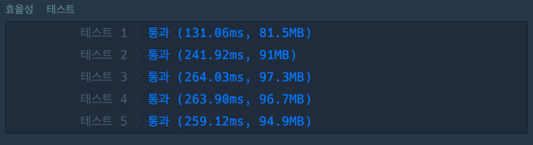
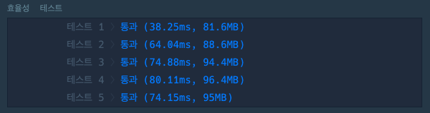

13일, 프로그래밍 주 차
오늘은 알고리즘 문제를 더 풀고 정리해 보는 시간을 가졌다.
알고리즘 풀이 공부를 하다 보니, 정확성으로는 통과를 하더라도,
효율성을 측정해서 너무 오래 걸리거나 하면 통과되지 못하는 문제들도 있다는 것을 확인하고.
공부해 보다가 시간 복잡도라는 것을 알게 됐다.
예를 들어 아래의 문제 같은 경우
완주하지 못한 선수
제출 후 채점 시 정확성 테스트 후,
효율성 테스트를 하게 되는데 원래 처음의 풀이는 아래처럼 풀었다.
public static String solution(String[] participant, String[] completion){
Arrays.sort(participant);
Arrays.sort(completion);
for(int i = 0; i < completion.length; i++){
if(participant[i].equals(completion[i])){
continue;
}else{
return participant[i];
}
}
return participant[participant.length-1];
}
효율성은 아래와 같이 나왔고,

Array.sort에서 아마 내부적으로 배열을 일일이 정렬하기 때문에
효율성을 떨어뜨리지는 않을까라고 생각했고
애초에 이 알고리즘의 경우 해시라는 카테고리 안에 들어가 있어서
해시가 뭐지? 해시 맵으로 풀어야 하나?라는 생각이 들었다.
그래서 다른 방법으로 찾아본 뒤에 또 풀어보았다.
아마 정석 풀이? 정도로 생각되는
HashMap을 통하여 또 풀어보았다.
hash로 풀었을 경우 효율성은 아래처럼 나왔고

단순 배열로 풀었을 때 보다 3~4배는 속도 면에서 효율성이 좋다고 나온다!
public static String solution(String[] participant, String[] completion){
String answer ="";
HashMap<String, Integer> map = new HashMap<>();
for(String p : participant)
map.put(p, map.getOrDefault(p,0) + 1);
for(String c : completion)
map.put(c, map.get(c) - 1 );
Iterator<Map.Entry<String, Integer>> iter = map.entrySet().iterator();
while (iter.hasNext()){
Map.Entry<String, Integer> entry = iter.next();
if(entry.getValue() != 0){
answer = entry.getKey();
break;
}
}
return answer;
}
마무리
계속 문제들을 풀다 보니,
초반에는 갖가지 이상한 방법으로 풀이를 해 코드량이 생각보다 길었는데
이제는 조금씩 깔끔해지고 있는 것 같다.
그리고 한 시간? 정도 풀어보고 아예 어떻게 구현해야 할지 감이 안 온다면
차라리 답을 본 후 해석을 하고 자기 것으로 만드는 게 좋은 방법인 것 같다!
생각해 봐야 할 것들
- 시간 복잡도
- 메소드를 많이 사용해서 할지, 일일이 코딩할지 (어찌 됐건 메소드를 사용해서 풀어도 내부적으로는 똑같이 동작한다.)
- 어떤 컬렉션, 알고리즘을 쓰냐에 따라 속도가 천차만별이다.